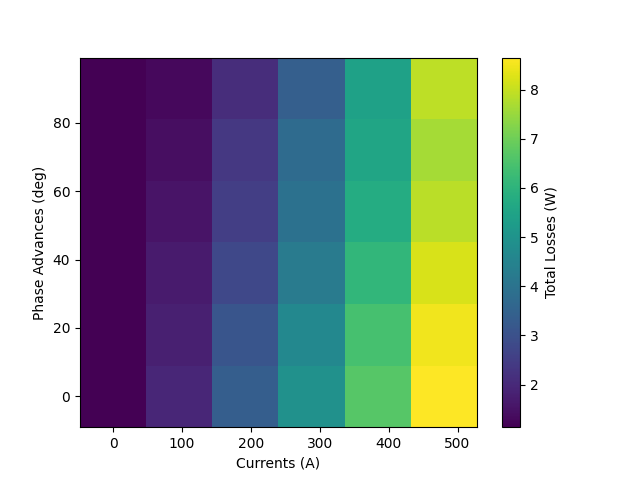
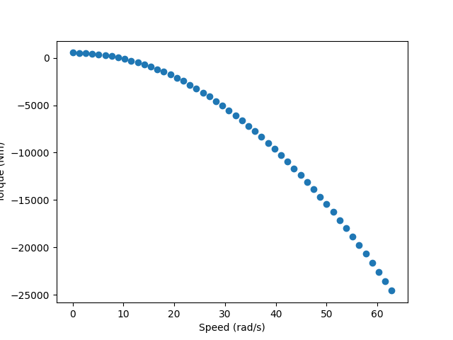

Note
Go to the end to download the full example code.
Simple workflow#
This example shows how to use PyConcentEV to perform basic operations. - Required imports - Define example data - Get a token from Ansys ID - Use API client for the Ansys ConceptEV service
Perform Required imports#
import datetime
from pathlib import Path
import matplotlib.pyplot as plt
from ansys.conceptev.core import app
Encryption unavailable. Opting in to plain text.
Traceback (most recent call last):
File "/home/runner/work/pyconceptev/pyconceptev/.venv/lib/python3.13/site-packages/msal_extensions/libsecret.py", line 18, in <module>
import gi # https://github.com/AzureAD/microsoft-authentication-extensions-for-python/wiki/Encryption-on-Linux # pylint: disable=line-too-long
^^^^^^^^^
ModuleNotFoundError: No module named 'gi'
During handling of the above exception, another exception occurred:
Traceback (most recent call last):
File "/home/runner/work/pyconceptev/pyconceptev/src/ansys/conceptev/core/auth.py", line 52, in build_persistence
return build_encrypted_persistence(location)
File "/home/runner/work/pyconceptev/pyconceptev/.venv/lib/python3.13/site-packages/msal_extensions/persistence.py", line 98, in build_encrypted_persistence
return LibsecretPersistence(location)
File "/home/runner/work/pyconceptev/pyconceptev/.venv/lib/python3.13/site-packages/msal_extensions/persistence.py", line 314, in __init__
from .libsecret import ( # This uncertain import is deferred till runtime
LibSecretAgent, trial_run)
File "/home/runner/work/pyconceptev/pyconceptev/.venv/lib/python3.13/site-packages/msal_extensions/libsecret.py", line 20, in <module>
raise ImportError("""Unable to import module 'gi'
^^^^^^^^^^^^^^^^^^^^^^^^^^^^^^^^^^^^^^^^^^^^^^^^^
...<5 lines>...
""") # Message via exception rather than log
^^^^
ImportError: Unable to import module 'gi'
Runtime dependency of PyGObject is missing.
Depends on your Linux distro, you could install it system-wide by something like:
sudo apt install python3-gi python3-gi-cairo gir1.2-secret-1
If necessary, please refer to PyGObject's doc:
https://pygobject.readthedocs.io/en/latest/getting_started.html
Define example data#
You can obtain example data from the schema sections of the API documentation.
MOTOR_LAB_FILE = Path("resources") / "e9.lab"
MOTOR_LOSS_MAP_FILE = Path("resources") / "e9.xlsx"
AERO_1 = {
"name": "New Aero Config",
"drag_coefficient": 0.3,
"cross_sectional_area": 2,
"config_type": "aero",
}
AERO_2 = {
"name": "Second Aero Configuration",
"drag_coefficient": 0.6,
"cross_sectional_area": 3,
"config_type": "aero",
}
MASS = {
"name": "New Mass Config",
"mass": 3000,
"config_type": "mass",
}
WHEEL = {
"name": "New Wheel Config",
"rolling_radius": 0.3,
"config_type": "wheel",
}
TRANSMISSION = {
"gear_ratios": [5],
"headline_efficiencies": [0.95],
"max_torque": 500,
"max_speed": 2000,
"static_drags": [0.5],
"friction_ratios": [60],
"windage_ratios": [40],
"component_type": "TransmissionLossCoefficients",
}
BATTERY = {
"capacity": 86400000,
"charge_acceptance_limit": 0,
"component_type": "BatteryFixedVoltages",
"internal_resistance": 0.1,
"name": "New Battery",
"voltage_max": 400,
"voltage_mid": 350,
"voltage_min": 300,
}
motor_data = {"name": "e9", "component_type": "MotorLabID", "inverter_losses_included": False}
Use API client for the Ansys ConceptEV service#
Use the API client to perform basic operations on the Ansys ConceptEV service. Such as: - Check api connection is healthy. - Get the account ID and HPC ID. - Create a new project. - Create a new concept within that project.
with app.get_http_client() as client:
health = app.get(client, "/health")
print(f"API is healthy: {health}\n")
token = app.get_token(client)
account_id = app.get_account_id(token)
hpc_id = app.get_default_hpc(token, account_id)
product_id = app.get_product_id(token)
# Uncomment to print HPC ID
# print(f"HPC ID: {hpc_id}\n")
# Create a project
project = app.create_new_project(
client, account_id, hpc_id, f"New Project +{datetime.datetime.now()}"
)
print(f"ID of the created project: {project['projectId']}")
# Create a concept with that project
concept = app.create_new_concept(
client, project["projectId"], product_id, f"New Concept +{datetime.datetime.now()}"
)
print(f"ID of the created concept: {concept['id']}")
Encryption unavailable. Opting in to plain text.
Traceback (most recent call last):
File "/home/runner/work/pyconceptev/pyconceptev/.venv/lib/python3.13/site-packages/msal_extensions/libsecret.py", line 18, in <module>
import gi # https://github.com/AzureAD/microsoft-authentication-extensions-for-python/wiki/Encryption-on-Linux # pylint: disable=line-too-long
^^^^^^^^^
ModuleNotFoundError: No module named 'gi'
During handling of the above exception, another exception occurred:
Traceback (most recent call last):
File "/home/runner/work/pyconceptev/pyconceptev/src/ansys/conceptev/core/auth.py", line 52, in build_persistence
return build_encrypted_persistence(location)
File "/home/runner/work/pyconceptev/pyconceptev/.venv/lib/python3.13/site-packages/msal_extensions/persistence.py", line 98, in build_encrypted_persistence
return LibsecretPersistence(location)
File "/home/runner/work/pyconceptev/pyconceptev/.venv/lib/python3.13/site-packages/msal_extensions/persistence.py", line 314, in __init__
from .libsecret import ( # This uncertain import is deferred till runtime
LibSecretAgent, trial_run)
File "/home/runner/work/pyconceptev/pyconceptev/.venv/lib/python3.13/site-packages/msal_extensions/libsecret.py", line 20, in <module>
raise ImportError("""Unable to import module 'gi'
^^^^^^^^^^^^^^^^^^^^^^^^^^^^^^^^^^^^^^^^^^^^^^^^^
...<5 lines>...
""") # Message via exception rather than log
^^^^
ImportError: Unable to import module 'gi'
Runtime dependency of PyGObject is missing.
Depends on your Linux distro, you could install it system-wide by something like:
sudo apt install python3-gi python3-gi-cairo gir1.2-secret-1
If necessary, please refer to PyGObject's doc:
https://pygobject.readthedocs.io/en/latest/getting_started.html
API is healthy: {'name': 'ConceptEV', 'version': '0.2.55'}
ID of the created project: fdef71b9-3728-48c9-91a3-9ab7334b1d44
ID of the created concept: 681a0c7262cc72cd710b4bab
Perform basic operations#
Perform basic operations on the design instance associated with the new project. Such as: - Create configurations. - Create components. - Create architectures. - Create requirements. - Create and submit a job. - Read the results and show the result in your browser.
design_instance_id = concept["design_instance_id"]
with app.get_http_client(design_instance_id=design_instance_id) as client:
# Create configurations
created_aero = app.post(client, "/configurations", data=AERO_1)
created_aero2 = app.post(client, "/configurations", data=AERO_2)
created_mass = app.post(client, "/configurations", data=MASS)
created_wheel = app.post(client, "/configurations", data=WHEEL)
# Read all aero configurations
configurations = app.get(
client, f"/concepts/{design_instance_id}/configurations", params={"config_type": "aero"}
)
# Uncomment to print configurations
# print(f"List of configurations: {configurations}\n")
# Get a specific aero configuration
aero = app.get(client, "/configurations", id=created_aero["id"])
print(f"First created areo configuration: {aero}\n")
# Create component
created_transmission = app.post(client, "/components", data=TRANSMISSION)
# Create component from file
motor_lab = app.post_component_file(client, MOTOR_LAB_FILE, "motor_lab_file")
motor_data["data_id"] = motor_lab[0]
motor_data["max_speed"] = motor_lab[1]
created_motor_lab = app.post(client, "/components", data=motor_data)
print(f"Created motor: {created_motor_lab}\n")
# Create loss map motor component from file
client.timeout = 2000
motor_loss_map = app.post_component_file(client, MOTOR_LOSS_MAP_FILE, "motor_torque_grid_file")
loss_map_motor_data = {
"name": "e9_loss_map",
"component_type": "MotorLossMapID",
"poles": 8,
"data_id": motor_loss_map[0],
}
created_motor = app.post(client, "/components", data=loss_map_motor_data)
print(f"Created motor: {created_motor}\n")
# Extend client timeout to get loss map from the motor
client.timeout = 2000
motor_loss_map = app.post(
client,
"/components:get_display_data",
data={},
params={"component_id": created_motor_lab["id"]},
)
# Show a figure of the loss map from the motor in you browser
x = motor_loss_map["currents"]
y = motor_loss_map["phase_advances"]
z = motor_loss_map["losses_total"]
fig, ax = plt.subplots()
im = ax.pcolormesh(x, y, z)
ax.set_xlabel("Currents (A)")
ax.set_ylabel("Phase Advances (deg)")
fig.colorbar(im, ax=ax, label="Total Losses (W)")
plt.show()
created_battery = app.post(client, "/components", data=BATTERY)
# Create an architecture
architecture = {
"number_of_front_wheels": 2,
"number_of_front_motors": 1,
"front_transmission_id": created_transmission["id"],
"front_motor_id": created_motor["id"],
"number_of_rear_wheels": 2,
"number_of_rear_motors": 0,
"battery_id": created_battery["id"],
}
created_arch = app.post(client, "/architectures", data=architecture)
print(f"Created architecture: {created_arch}\n")
# Create a requirement
requirement = {
"speed": 10,
"acceleration": 1,
"aero_id": created_aero["id"],
"mass_id": created_mass["id"],
"wheel_id": created_wheel["id"],
"state_of_charge": 0.9,
"requirement_type": "static_acceleration",
"name": "Static Requirement 1",
}
created_requirement = app.post(client, "requirements", data=requirement)
print(f"Created requirement: {created_requirement}")
# Create and submit a job
concept = app.get(client, "/concepts", id=design_instance_id, params={"populated": True})
job_info = app.create_submit_job(client, concept, account_id, hpc_id)
# Read and plot the results
results = app.read_results(client, job_info, calculate_units=False, filtered=True)
x = results[0]["capability_curve"]["speeds"]
y = results[0]["capability_curve"]["torques"]
fig, ax = plt.subplots()
fig = ax.scatter(x, y, label="Capability Curve")
ax.set_xlabel("Speed (rad/s)")
ax.set_ylabel("Torque (Nm)")
plt.show()
- 
- 
Encryption unavailable. Opting in to plain text.
Traceback (most recent call last):
File "/home/runner/work/pyconceptev/pyconceptev/.venv/lib/python3.13/site-packages/msal_extensions/libsecret.py", line 18, in <module>
import gi # https://github.com/AzureAD/microsoft-authentication-extensions-for-python/wiki/Encryption-on-Linux # pylint: disable=line-too-long
^^^^^^^^^
ModuleNotFoundError: No module named 'gi'
During handling of the above exception, another exception occurred:
Traceback (most recent call last):
File "/home/runner/work/pyconceptev/pyconceptev/src/ansys/conceptev/core/auth.py", line 52, in build_persistence
return build_encrypted_persistence(location)
File "/home/runner/work/pyconceptev/pyconceptev/.venv/lib/python3.13/site-packages/msal_extensions/persistence.py", line 98, in build_encrypted_persistence
return LibsecretPersistence(location)
File "/home/runner/work/pyconceptev/pyconceptev/.venv/lib/python3.13/site-packages/msal_extensions/persistence.py", line 314, in __init__
from .libsecret import ( # This uncertain import is deferred till runtime
LibSecretAgent, trial_run)
File "/home/runner/work/pyconceptev/pyconceptev/.venv/lib/python3.13/site-packages/msal_extensions/libsecret.py", line 20, in <module>
raise ImportError("""Unable to import module 'gi'
^^^^^^^^^^^^^^^^^^^^^^^^^^^^^^^^^^^^^^^^^^^^^^^^^
...<5 lines>...
""") # Message via exception rather than log
^^^^
ImportError: Unable to import module 'gi'
Runtime dependency of PyGObject is missing.
Depends on your Linux distro, you could install it system-wide by something like:
sudo apt install python3-gi python3-gi-cairo gir1.2-secret-1
If necessary, please refer to PyGObject's doc:
https://pygobject.readthedocs.io/en/latest/getting_started.html
First created areo configuration: {'item_type': 'config', 'name': 'New Aero Config', 'drag_coefficient_front': 0.3, 'drag_coefficient_rear': None, 'cross_sectional_area': 2.0, 'config_type': 'aero', 'id': '681a0c7262cc72cd710b4bac'}
Created motor: {'item_type': 'component', 'name': 'e9', 'mass': 0.0, 'moment_of_inertia': 0.0, 'cost': 0.0, 'id': '681a0c7362cc72cd710b4bb3', 'data_id': '681a0c7362cc72cd710b4bb1', 'submitted_job': None, 'inverter_losses_included': False, 'max_speed': 10000.0, 'stator_winding_temp': None, 'rotor_temp': None, 'stator_current_limit': None, 'control_strategy_bpm': None, 'control_strategy_sync': None, 'component_type': 'MotorLabID'}
Created motor: {'item_type': 'component', 'name': 'e9_loss_map', 'mass': 0.0, 'moment_of_inertia': 0.0, 'cost': 0.0, 'id': '681a0c7962cc72cd710b4bb6', 'data_id': '681a0c7862cc72cd710b4bb4', 'submitted_job': None, 'poles': 8, 'voltages': [400.0, 300.0], 'inverter_losses_included': False, 'component_type': 'MotorLossMapID'}
Created architecture: {'id': '681a0c7b62cc72cd710b4bb9', 'wheelbase': None, 'components_cost': 0.0, 'components_mass': 0.0, 'max_wheel_speed': 2000.0, 'number_of_front_wheels': 2, 'number_of_front_motors': 1, 'front_clutch_id': None, 'front_transmission_id': '681a0c7362cc72cd710b4bb0', 'front_motor_id': '681a0c7962cc72cd710b4bb6', 'front_inverter_id': None, 'number_of_rear_wheels': 2, 'number_of_rear_motors': 0, 'rear_clutch_id': None, 'rear_transmission_id': None, 'rear_motor_id': None, 'rear_inverter_id': None, 'battery_id': '681a0c7962cc72cd710b4bb7'}
Created requirement: {'id': '681a0c7b62cc72cd710b4bbb', 'name': 'Static Requirement 1', 'aero_id': '681a0c7262cc72cd710b4bac', 'mass_id': '681a0c7362cc72cd710b4bae', 'wheel_id': '681a0c7362cc72cd710b4baf', 'deceleration_limit_id': None, 'shift_delta': 0.0, 'ancillary_load_id': None, 'full_range_calculation': False, 'component_configurations': [], 'requirement_type': 'static_acceleration', 'speed': 9.999999999999998, 'acceleration': 1.0, 'state_of_charge': 0.9000000000000001, 'altitude': 0.0, 'headwind': 0.0, 'gradient': 0.0, 'front_axle_split': None}
Encryption unavailable. Opting in to plain text.
Traceback (most recent call last):
File "/home/runner/work/pyconceptev/pyconceptev/.venv/lib/python3.13/site-packages/msal_extensions/libsecret.py", line 18, in <module>
import gi # https://github.com/AzureAD/microsoft-authentication-extensions-for-python/wiki/Encryption-on-Linux # pylint: disable=line-too-long
^^^^^^^^^
ModuleNotFoundError: No module named 'gi'
During handling of the above exception, another exception occurred:
Traceback (most recent call last):
File "/home/runner/work/pyconceptev/pyconceptev/src/ansys/conceptev/core/auth.py", line 52, in build_persistence
return build_encrypted_persistence(location)
File "/home/runner/work/pyconceptev/pyconceptev/.venv/lib/python3.13/site-packages/msal_extensions/persistence.py", line 98, in build_encrypted_persistence
return LibsecretPersistence(location)
File "/home/runner/work/pyconceptev/pyconceptev/.venv/lib/python3.13/site-packages/msal_extensions/persistence.py", line 314, in __init__
from .libsecret import ( # This uncertain import is deferred till runtime
LibSecretAgent, trial_run)
File "/home/runner/work/pyconceptev/pyconceptev/.venv/lib/python3.13/site-packages/msal_extensions/libsecret.py", line 20, in <module>
raise ImportError("""Unable to import module 'gi'
^^^^^^^^^^^^^^^^^^^^^^^^^^^^^^^^^^^^^^^^^^^^^^^^^
...<5 lines>...
""") # Message via exception rather than log
^^^^
ImportError: Unable to import module 'gi'
Runtime dependency of PyGObject is missing.
Depends on your Linux distro, you could install it system-wide by something like:
sudo apt install python3-gi python3-gi-cairo gir1.2-secret-1
If necessary, please refer to PyGObject's doc:
https://pygobject.readthedocs.io/en/latest/getting_started.html
Connected to OCM Websockets.
Status:RUNNING
Status:PHASE_PROGRESS
Status:PHASE_PROGRESS
Status:PHASE_DONE
Status:PHASE_PROGRESS
Progress:1
Status:PHASE_DONE
Status:uploading
Status:PHASE_PROGRESS
Status:PHASE_DONE
Status:PHASE_PROGRESS
Status:FINISHED
Delete the extra project on the server.#
Delete the project on the server.
Warning
This will delete the project and all its contents. Only needed for keep test environment clean.
Encryption unavailable. Opting in to plain text.
Traceback (most recent call last):
File "/home/runner/work/pyconceptev/pyconceptev/.venv/lib/python3.13/site-packages/msal_extensions/libsecret.py", line 18, in <module>
import gi # https://github.com/AzureAD/microsoft-authentication-extensions-for-python/wiki/Encryption-on-Linux # pylint: disable=line-too-long
^^^^^^^^^
ModuleNotFoundError: No module named 'gi'
During handling of the above exception, another exception occurred:
Traceback (most recent call last):
File "/home/runner/work/pyconceptev/pyconceptev/src/ansys/conceptev/core/auth.py", line 52, in build_persistence
return build_encrypted_persistence(location)
File "/home/runner/work/pyconceptev/pyconceptev/.venv/lib/python3.13/site-packages/msal_extensions/persistence.py", line 98, in build_encrypted_persistence
return LibsecretPersistence(location)
File "/home/runner/work/pyconceptev/pyconceptev/.venv/lib/python3.13/site-packages/msal_extensions/persistence.py", line 314, in __init__
from .libsecret import ( # This uncertain import is deferred till runtime
LibSecretAgent, trial_run)
File "/home/runner/work/pyconceptev/pyconceptev/.venv/lib/python3.13/site-packages/msal_extensions/libsecret.py", line 20, in <module>
raise ImportError("""Unable to import module 'gi'
^^^^^^^^^^^^^^^^^^^^^^^^^^^^^^^^^^^^^^^^^^^^^^^^^
...<5 lines>...
""") # Message via exception rather than log
^^^^
ImportError: Unable to import module 'gi'
Runtime dependency of PyGObject is missing.
Depends on your Linux distro, you could install it system-wide by something like:
sudo apt install python3-gi python3-gi-cairo gir1.2-secret-1
If necessary, please refer to PyGObject's doc:
https://pygobject.readthedocs.io/en/latest/getting_started.html
Deleted project fdef71b9-3728-48c9-91a3-9ab7334b1d44
Total running time of the script: (1 minutes 4.014 seconds)